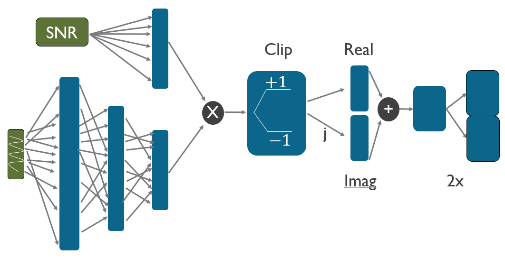

Research
General Research Focus: ML for wireless and signal processing
The short of it is: I do machine learning for wireless communications problems. So far machine learning for signal processing has been particularly held back by the lack of need. In many cases, we have very good, tractable models to solve problems. Unfortunately, that tends to no longer be true when we consider the difficult problems that next generation wireless systems face. A common reason is for quantization due to low resolution data converters. The use of low resolution data converters reduces power consumption and cost, while destroying information in the received signal. Another area of interest for machine learning in signal processing is the estimation of small scale fading parameters in mmWave MIMO channels. This is actively being researched but deep learning is well positioned to provide breakthroughs in this complicated problem as well.
Deep Learning-Based Carrier Frequency Offset Estimation with 1-Bit ADCs [project page]
My first paper, which I gave a presentation on at SPAWC 2020 [video], specifically investigates the validity of deep learning for signal processing. We target the problem of estimating the carrier frequency offset of a one-bit quantized sinusoid with short block lengths and low SNR. We first show a well performing training setup, which helps to ensure the model learns effectively across a wide range of SNR. From this we found that training data should stay within 0-10dB SNR to capture the most relevant information. We also identified the effects that block length and quantization on the training data have for the final model. Finally, we proposed a convolutional neural network which is able to outperform FFT methods in both estimation error and execution time.
SignalNet: Network for Low Resolution Sinusoid Detection and Estimation
This work is the follow up to the previous paper. In this case we now allow for multiple sinusoids with unknown phase and amplitude to be within the received signal prior to quantization. The task is then the joint detection and estimation of the various sinusoidal components and their frequencies. This task is naturally difficult and nearly impossible with one-bit resolution, but with only two or three bits the task is learnable. We propose an end to end network which uses domain knowledge to estimate and subtract quantized sinusoids from the input for multiple signal estimation. We show that we are able to outperform Minimum Description Length (MDL) style detectors, even when using much higher resolution data for the MDL estimator. I will release the code when the paper is accepted at IEEE Trans. on Signal Processing.
Frequency Synchronization for Low Resolution Millimeter-Wave
This work was presented at Asilomar 2020. We now introduce more realism into the deep learning estimators from the first investigation. The most obvious first step is to allow for channel models, which we model as just random, multi-tap channels. The next step is we allow for a configurable pilot generator, which is also a neural network, to jointly optimize the pilot signal and frequency estimator. The result is that our frequency estimator becomes more robust at low SNR and is able to handle channel models without any noticeable effect. We handle the channel effects by applying Moose Algorithm within the neural networks, which repeats the training signal and looks for the rotation of phase between the pilots, removing the channel from the algorithm. We also show that the added complexity of the generator is still not significant enough to prevent near real-time operation, and it is easily retrained to handle time-variant systems.

Results from my first investigation into low resolution sinusoidal frequency estimation. 
A block diagram of the neural network generator used to produce pilot sequences for improving channel and noise robustness with our CFO estimator.